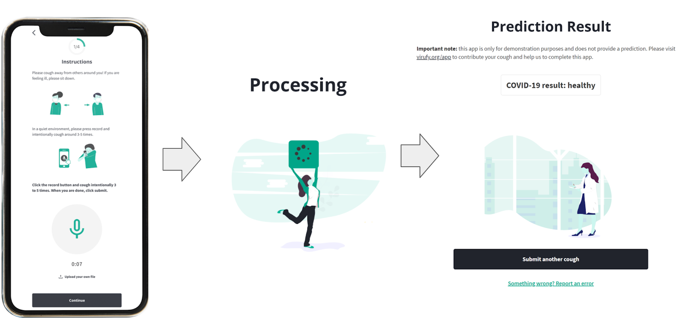

Virufy on-Device Detection for COVID-19
The Team
Problem Description
COVID-19 testing is inadequate, especially in developing countries. Testing is scarce, requires trained nurses with costly equipment, and is expensive, limiting how many people can obtain their results. Also, many people in developing countries cannot risk taking tests because results are not anonymous, and a positive result may mean a loss of day-to-day work income and starvation for their families, which further allows COVID-19 to spread.
Numerous attempts have been made to solve this problem with partial success, including contact tracing apps which have not been widely adopted often due to privacy concerns. Pharmaceutical companies have also fast-tracked development of vaccines, but they still will not be widely available in developing countries for some time.
To combat these problems, we propose a free smartphone app to detect COVID-19 from cough recordings through machine learning analysis of audio signals, which would allow for mass-scale testing and could effectively stop the spread of the virus.
We decided to use offline edge prediction for our app for several reasons. Especially in developing countries, Internet connectivity / latency is limited and people often face censoring. Data privacy regulations such as GDPR are now commonplace and on-device prediction will allow for diagnoses without personal information or health data crossing borders. Because our app will potentially serve billions of predictions daily, edge prediction is also more cost-effective, as maintaining and scaling cloud infrastructure to serve all of these predictions will be costly and difficult to maintain.
System Design
In designing our system and pipeline, we first and foremost kept in mind that this pipeline would be running offline on edge devices in developing countries, including outdated phones with weak CPUs. We aimed for a pipeline that could efficiently process data, run a simple model, and return a prediction within a minute. To do this, we simplified our model, sacrificing some “expressiveness” in exchange for reduced complexity, but also through straightforward preprocessing of data.
For the frontend, we decided on a web app because it can be used in the browser, which is operating-system-agnostic; in comparison, apps may only run on certain operating systems. Our frontend is written in ReactJS + TypeScript, which is the industry standard for modern web design. It employs responsive web design principles to be compatible with a wide range of screen sizes and aspect ratios present on different devices. Internally, the frontend calls a TensorFlow.js (TFJS) model for inference.

We chose to use the TensorFlow.js (TFJS) framework because it is supported for use with web browsers. The TFJS Speech Command library provides a JavaScript implementation of the Fourier Transform (Browser FFT) to allow straightforward preprocessing of the raw audio files. We trained a vanilla TensorFlow model on background noise examples provided by the sample TFJS Speech Commands code, along with a dataset of thousands COVID-19 test result labeled coughs, so that our model could distinguish coughs from background noise. We then converted this trained model into the TFJS LayersModel format (with the model architecture as a JSON and weights in .bin files), so that we could integrate it into the front end JavaScript code for browser inference on-device.
Our system’s basic pipeline is as follows:
- User opens our app
- The TFJS models are downloaded from S3 onto the user’s device
- Microphone detects noise from user
- The Speech Commands library continuously preprocesses the audio by creating audio spectrograms
- The spectrograms are run through the model
- Only if the audio snippet is classified as a cough, the user will receive a prediction of whether they are COVID positive or negative
It is worth noting that model files are downloaded and loaded into memory only when the user first opens the app. After this, no Internet access is required and the system is able to make predictions offline.
Machine Learning Component
The model that powers our application is based on the publicly available TensorFlow.js Speech Commands module. Our model is intended to be used with the WebAudio API supported by all major browsers and expects, as input, audio data preprocessed with the browser Fast Fourier Transform (FFT) used in WebAudio’s GetFloatFrequencyData. The result of this FFT is a spectrogram which represents a sound wave as a linear combination of single-frequency components. The spectrogram, which can be thought of as a 2D image, is passed through a convolutional architecture to obtain logits which can be used in multiclass prediction. Specifically, this model has 13 layers with four pairs of Conv2D to MaxPooling layers, two dropout layers, a flatten layer, and two dense layers.

Because training from scratch is expensive, we started with a model trained using the Speech Commands dataset [2], trained to recognize 20 common words such as the numbers “one” to “ten”, the four directions “left”, “right”, “up”, “down”, and basic commands like “stop” and “go”. We performed transfer learning on this model by removing the prediction layer and initializing a new one with the correct number of prediction classes. Afterwards, we fine-tuned the weights on the open source COUGHVID dataset, which provides over 20,000 crowdsourced cough recordings from a plethora of different characteristics including gender, geographic location, age, and COVID status.
To ensure that data is preprocessed in the same way during training and testing, we use a custom preprocessing TensorFlow model which is trained to emulate the browser FFT that is performed by WebAudio, producing the same spectrogram as output. This browser FFT emulating model is provided and maintained by Tensorflow Speech Commands. Creating our own training pipeline allowed us to select our model architecture based on existing ongoing research efforts and fine tune our hyperparameters.
System Evaluation
Offline evaluation was done on our model as a quick way to ensure our model was working correctly. This meant setting aside 30% of our data as test data. To monitor offline testing, we used Weights and Biases. As shown below, 50 epochs were sufficient to achieve convergence in training and validation accuracies, with corresponding decreasing losses. Here is an example of what we we logged:

As demonstrated by the graphs as well as the chart, the “loss”, or the loss calculated from our training set was 0.1717. While the ‘val_loss’, or the loss calculated from the testing set was 0.09781. Also, the “acc” or the accuracy calculated from the training set was 0.93298. While the ‘val_acc’ or the accuracy calculated from the testing set was 0.96875. Additionally, we evaluated the model before and after TFJS conversion and found that the accuracy as well as the loss on both the training and testing set were the same. This was important because we were initially concerned that during the conversion process the quality of our model would go down, however we were delightfully surprised that this did not occur.
The remainder of our evaluation was done through real world testing. Although the gold standard of testing would be large-scale, randomized clinical trials, with data collected from a variety of demographic groups and recording devices, we did not have the time and resources to do that in the constraints of the class. Instead, we did informal evaluations on our own team members and friends in Argentina and Brazil.
Anecdotally, the prediction was highly accurate on our group members, who were primarily Asian and all healthy. This remained true across a variety of devices such as smartphones, laptops, and tablets.
The collection of external results was complicated by ethical considerations and lack of access to PCR tests to provide ground-truth labels. Nonetheless, we will note here two cases in Brazil. One individual was recovered, but previously was diagnosed with COVID-19; the model predicted that he had COVID-19. The other individual had COVID-19, but was predicted to be healthy. This illustrates the inherent challenge of translating models from development to production; model accuracy might be highly degraded due to distribution shift between the training and inference data.
Application Demonstration
In the beginning stages of the design process prior to this course, the Virufy product designer determined the appropriate target audience by conducting user interviews. She selected potential interviewee candidates based on certain demographic criteria such as being a citizen of selected Latin America countries or being tech-savvy and owning a cell phone.
After gathering target audience candidates from six Latin America countries as well as the U.S. and Pakistan, user interviews were conducted. The results from the interviews were then synthesized to create user personas. These personas helped her produce empathetic and user-centered designs throughout the whole design process.

Once initial ideation and designs were completed, the designer conducted a series of prototype user tests in which the user was observed as they walked themselves through the app mockup. The data from each user test was then synthesized to design new and improved iterations. After numerous user tests and iterations and evolving, the designer created a mockup of the demonstration application.
Over the past month, we worked with the Virufy designer to adapt the design to our specific user needs given our novel contribution towards edge prediction. Through discussions with hospitals and normal users, alongside the technical limitations of TensorFlow.js, we finalized on our below design in which the user could click the microphone to trigger our model execution. We made the instructions simple and easy to follow, so users could record their cough and immediately get their prediction with our edge model which performed very fast (under 200ms on our laptops).
Reflections
Throughout the course of this 2-month project, we explored many areas technically, some of which were fruitful, and others of which were dead ends.
-
Google’s Teachable Machine
At the start of our project, we used the MFCC and mel-spectrogram audio features in our models based on state-of-the-art research, but ran into issues as the same preprocessing code was not supported on-device with TFJS. We reached out to Pete Warden, an expert of TinyML on Google’s TensorFlow team, who pointed us to Teachable Machine, a web-based tool to create models, which uses TensorFlow.js to train models and generates code to integrate into JavaScript front ends. Although very simple and lightweight, we soon discovered Teachable Machine was not a feasible long-term solution for us, as it required manual recording and upload of training audio files, while also not providing us the flexibility to configure model architecture as we hoped to do. This ultimately forced us to train our own custom model.
-
Speech Commands Library
TensorFlow’s Speech Commands library provided a simple API to access a variety of important features like segmenting the continuous audio stream into one-second snippets and performing FFT feature extraction to obtain spectrograms. The availability of pre-existing training pipelines as well as example applications using Speech Commands provided a strong foundation for us to adapt our own pipeline and frontend application.
-
Team Dynamics
We compartmentalized responsibilities such that individual members were largely in charge of separate components of the system. Frequent communication via Slack was key to ensure that we all had a sense of the bigger picture.
Overall, we learned over the quarter how to integrate frontend and backend codebases to build a production machine learning system, while utilizing APIs and libraries to expedite the process. Our knowledge also broadened as we considered the unique challenges of developing models for CPU-bound edge devices in the audio analysis domain.
Continuing beyond this course, we would like to explore the following areas:
-
Model Performance
State-of-the-art research papers suggest that accuracies as high as 98% are possible for larger neural networks. We would like to tune our tiny edge models to perform at similar accuracies.
-
Dataset Diversity
Our model development was limited by the lack of access to large-scale, demographically diverse, and accurately labelled datasets. For next steps, we hope to remedy this by leveraging the Coswara dataset, along with the larger datasets Virufy is collecting globally.
-
Microphone Calibration
We didn’t take into account the distribution shift between training and inference due to differences of microphone hardware specifications between edge devices.
-
Audio Compression
The audio samples we trained on were of similar audio formats and frequencies. Exploring the effect of audio compression codecs such as mp3 on model performance may lead to interesting insights.
-
Expansion to More Diseases
COVID-19 is not the only disease that affects patient cough sounds. We believe our model can be enhanced to distinguish between various other coronaviruses such as the common cold and flu, along with asthma and pneumonia through use of a multi-class classifier.
-
Embedded Hardware
An interesting area to explore is further shrinking our model to fit onto specialized embedded devices with microphones. Such devices could be cheaply produced and shipped globally to provide COVID detection without smartphones.
Broader Impacts
Our app is intended to be used by people in developing countries who need an anonymous solution for testing anytime, or by anyone in a community at risk of COVID-19. However, we have identified some unintended uses of our app.
Because we intend to share our technology freely and because the algorithm runs on-device, competitors will easily be able to take our algorithm and create copies of our app and may even block access to our app and sell theirs for profit. To prevent this, we will open source our technology under terms requiring attribution to Virufy and prohibiting charging users for the use of the algorithm.
Another risk is that people may begin to ignore medical advice and believe only in the algorithm and might use the results in place of an actual diagnostic test. This is very risky because if the algorithm mispredicts, we may be held liable. The spread of COVID-19 may increase if COVID-19 positive people become confident to socialize with false negative test results. To mitigate this, we intend to add disclaimers that our app is a pre-screening tool that should be used only in conjunction with medical providers’ input. Additionally, we will work closely with public health authorities to clinically validate our algorithm and ensure it is safe for usage.


People may also start testing the algorithm with irrelevant recordings of random noises such as talking. To address this, we have equipped our algorithm with a cough detection pre-check layer to prevent any non-cough noises from being classified.
Finally, people especially in poorer contexts may share the same smartphones with several users, which can increase the likelihood of spreading COVID-19. Thus, our instructions clearly state that users must disinfect their device and keep 20 feet away from others while recording.
Code
Our TensorFlow JavaScript audio preprocessing and model prediction code can be found here: https://github.com/dtch1997/virufy-tm-cough-app
Our finalized progressive web application code can be found here: https://github.com/virufy/demo/tree/edge-xoor
References
We’re extremely grateful to Pete Warden, Jason Mayes, and Tiezhen Wang from Google’s TensorFlow.js team for their kind guidance on TinyML concepts and usage of the speech_commands library, both in class lecture and during the few weeks of our development.
Jonatan Jaskilioff and the team at XOOR were very gracious to lend their support and guidance in integrating our JavaScript code into the progressive web app they had built pro bono for Virufy.
We are also indebted to the broader Virufy team for guiding us on the real-world applicability and challenges of our edge device prediction project. We leveraged their deep insights from their members distributed across 20 developing countries in formulating our problem statement. Additionally, we built on top of the open source demo app that they had built prior based on intentions for real-life usage, along with their prior research findings and open source code for our model training.
In preparing our final report, we are grateful to Colleen Wang for her kind support in editing the content of our post, Virufy lead UX designer Maisie Mora for helping explain the design process in the application demonstration section, and Saad Aslam for his kind support in converting our blog post to a nicely formatted HTML page.
Finally, we cannot forget the great lessons and close guidance from Professor Chip Huyen and TA Michael Cooper who helped us open our eyes to production machine learning and formulate our problem to be attainable within the short 2 month course quarter.
[1] Tensorflow Speech Commands dataset, https://arxiv.org/pdf/1804.03209.pdf
[2] Teachable Machine, https://teachablemachine.withgoogle.com/
[3] Virufy: A Multi-Branch Deep Learning Network for Automated Detection of COVID-19 https://arxiv.org/ftp/arxiv/papers/2103/2103.01806.pdf